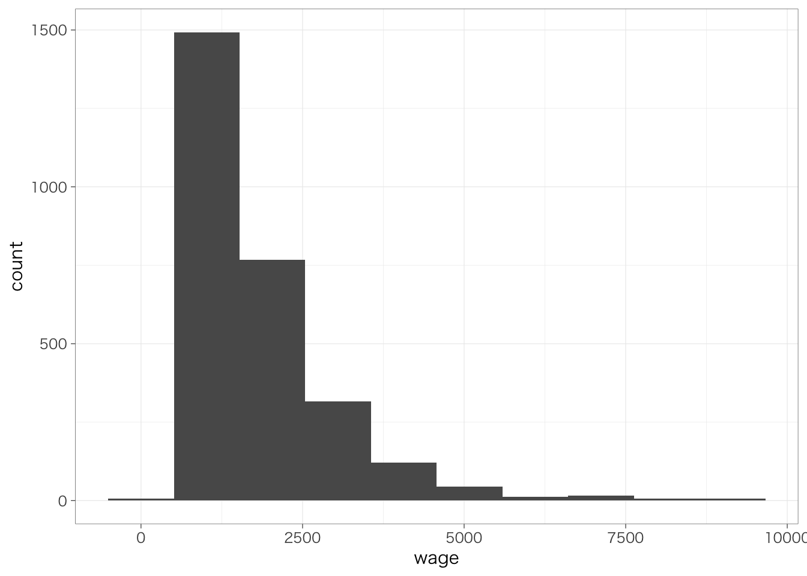

Chapter 5 1変数の集計
以下の記述はすでにtidyverseパッケージを読み込んでおり、また読み込んだデータをpiaacというデータフレームに入れていることを前提とします。データフレームの名前はpiaacである必要はありません。以下のようなコードを実行しています。
library(tidyverse)piaac <- read_csv("data/piaac_sample.csv")## Rows: 2790 Columns: 17## ── Column specification ────────────────────────────────────────────────────────
## Delimiter: ","
## chr (7): gender, workhour_fct, educ, mothereduc, fathereduc, parenteduc, oc...
## dbl (10): id, wage, logwage, age, work, workhour, numeracy, ojt, health, wag...##
## ℹ Use `spec()` to retrieve the full column specification for this data.
## ℹ Specify the column types or set `show_col_types = FALSE` to quiet this message.また、Macでggplot2パッケージを使用し、グラフ中に日本語を使用する場合には、library(tidyverse)またはlibrary(ggplot2)を実行したうえで、たとえば以下のようなコードをあらかじめ実行しておく必要があります。
theme_set(theme_grey(base_family = "HiraginoSans-W3"))この資料で使用しているグラフについては以下のようにthemeを設定しています。
theme_set(theme_bw(
base_family = "HiraginoSans-W3",
base_size = 11,
base_rect_size = 0.2,
base_line_size = 0.2
))Windowsユーザの方は上記コードからbase_family =の行を除いたこちらのコードで同じような雰囲気になります：
theme_set(theme_bw(
base_size = 11,
base_rect_size = 0.2,
base_line_size = 0.2
))5.1 連続変数を集計する
piaac %>%
summarize(mean = mean(wage))## # A tibble: 1 × 1
## mean
## <dbl>
## 1 1783.NAになってしまった。集計する変数（この場合はwage）にNAが含まれている場合には、平均値が計算できず、NAとなってしまう。NAを除いて平均値を計算するときには、あらかじめwageがNAの行を除外しておくとよい。
piaac %>%
filter(is.na(wage) == FALSE) %>%
summarize(mean = mean(wage))## # A tibble: 1 × 1
## mean
## <dbl>
## 1 1783.平均値だけでなく、いろいろな統計量を計算できる。よく用いるものは以下のとおり。
| 関数 | 意味 |
|---|---|
mean(x) |
平均値 |
sd(x) |
標準偏差 |
max(x) |
最大値 |
min(x) |
最小値 |
quantile(x, 0.5) |
分位数。0.5とした場合には50パーセンタイル点（中央値）を計算する。0（最小）から1（最大）まで任意の点を指定できる。 |
n() |
行数を数える。 |
全部集計してみるとたとえば以下のような感じになる。
piaac %>%
filter(is.na(wage) == FALSE) %>%
summarize(mean = mean(wage),
sd = sd(wage),
max = max(wage),
min = min(wage),
p25 = quantile(wage, 0.25),
p50 = quantile(wage, 0.5),
p75 = quantile(wage, 0.75),
n = n())## # A tibble: 1 × 8
## mean sd max min p25 p50 p75 n
## <dbl> <dbl> <dbl> <dbl> <dbl> <dbl> <dbl> <int>
## 1 1783. 1178. 9615. 462. 942. 1445. 2206. 2790最小値、第1四分位点、中央値、平均値、第3四分位点、最大値をまとめて表示したい場合には、これらを計算したい変数だけをselect()で抽出したうえで、summary()関数を使うとできる。
piaac %>%
select(wage) %>%
summary()## wage
## Min. : 462.4
## 1st Qu.: 942.4
## Median :1445.1
## Mean :1782.7
## 3rd Qu.:2206.3
## Max. :9615.45.2 連続変数の分布の可視化：ヒストグラム
piaac %>%
ggplot(aes(x = wage)) +
geom_histogram()## `stat_bin()` using `bins = 30`. Pick better value with `binwidth`.
piaac %>%
ggplot(aes(x = wage)) +
geom_histogram(bins = 10)
piaac %>%
ggplot(aes(x = wage)) +
geom_histogram(bins = 100)
5.3 カテゴリ変数の集計
カテゴリ変数の場合は平均値や標準偏差のような要約統計量を計算することはできない（意味がない）。最も基本的な集計は、各カテゴリにそれぞれ何人いるのかを確認することだ。with(table())を使うことで各カテゴリの人数（行数）をみることができる。
piaac %>%
with(table(occupation))## occupation
## サービス・販売 管理職 技術職・准専門職
## 586 221 447
## 技能工 事務補助 設備・機械運転・組立
## 274 450 217
## 専門職 単純作業 農林漁業
## 422 147 26人数だけでなく、各職業にどれくらいの割合の人が含まれているのかも重要だ。先ほどのコマンドにprop.table()を加えることで、各カテゴリに含まれる人が全体に占める割合を計算できる。
piaac %>%
with(table(occupation)) %>%
prop.table()## occupation
## サービス・販売 管理職 技術職・准専門職
## 0.210035842 0.079211470 0.160215054
## 技能工 事務補助 設備・機械運転・組立
## 0.098207885 0.161290323 0.077777778
## 専門職 単純作業 農林漁業
## 0.151254480 0.052688172 0.009318996この値をすべて足すと1になる。
小数点以下が多すぎて見にくいので、小数点第3位で丸めよう。先ほどのコマンドにround(digits = 3)を加えると、小数点第3位で丸めることができる。digitsのところの値が、小数点第○位の○の値に対応する。
piaac %>%
with(table(occupation)) %>%
prop.table() %>%
round(3)## occupation
## サービス・販売 管理職 技術職・准専門職
## 0.210 0.079 0.160
## 技能工 事務補助 設備・機械運転・組立
## 0.098 0.161 0.078
## 専門職 単純作業 農林漁業
## 0.151 0.053 0.009この値はすべて足すと1になる。なので、この値を100倍すると百分率（%）としてよむことができる。
## カテゴリ変数の分布の可視化：棒グラフ
こうして集計した値を棒グラフにして表すと見やすいかもしれない。そのためにまず、先の集計表をデータフレーム形式に変換してみよう。
piaac %>%
with(table(occupation)) %>%
prop.table() %>%
as.data.frame()## occupation Freq
## 1 サービス・販売 0.210035842
## 2 管理職 0.079211470
## 3 技術職・准専門職 0.160215054
## 4 技能工 0.098207885
## 5 事務補助 0.161290323
## 6 設備・機械運転・組立 0.077777778
## 7 専門職 0.151254480
## 8 単純作業 0.052688172
## 9 農林漁業 0.009318996このように、1行が1つの職業を表し、Freqという列には先ほど計算した割合が入っているようなデータフレームに変換することができる。これをggplot()に渡してやることで、棒グラフをつくることができる。棒グラフを作るときのコマンドは、geom_col()。
piaac %>%
with(table(occupation)) %>%
prop.table() %>%
as.data.frame() %>%
ggplot(aes(x = occupation, y = Freq)) +
geom_col()
悪くないけれど、横軸のラベルがかぶってしまって、何を指しているのかいまいちわからなくなってしまっている。また、縦軸や横軸の名前は必ずしもわかりやすいものではないだろう。そこで、以下のようにコマンドを追加しよう。
piaac %>%
with(table(occupation)) %>%
prop.table() %>%
as.data.frame() %>%
ggplot(aes(x = occupation, y = Freq)) +
geom_col() +
labs(x = "職業", y = "割合") +
theme(axis.text.x = element_text(angle = 45, hjust = 1)) # X軸を45度傾ける
5.4 記述統計量の一覧表を作る
論文などで分析に使用する変数の記述統計量の一覧表を示していることがよくある。このような表を作ることで、読む側にとっては変数の分布を確認でき、その後の結果も読みやすくなる。こうした一覧表を作るために非常に便利なパッケージがgtsummaryだ。まずはこれを読み込もう。
install.packages("gtsummary") #未インストールの場合
libary(gtsummary)次の5つの変数の記述統計量の一覧表を作りたいとしよう。select()を使って、こららの変数だけを残したデータフレームを作成する。
| 列名 | 型 | 変数ラベル |
|---|---|---|
| gender | カテゴリ（factor） | 性別 |
| age | 連続（numeric） | 年齢 |
| educ | カテゴリ（factor） | 最終学歴 |
| occupation | カテゴリ（factor） | 職業 |
| wage | 連続（numeric） | 賃金 |
piaac_selectedvar <- piaac %>%
select(gender, age, educ, occupation, wage)
piaac_selectedvar %>%
head()## # A tibble: 6 × 5
## gender age educ occupation wage
## <chr> <dbl> <chr> <chr> <dbl>
## 1 女性 45 高校 技術職・准専門職 793.
## 2 男性 48 大学大学院 サービス・販売 1763.
## 3 男性 47 大学大学院 専門職 2692.
## 4 男性 58 大学大学院 管理職 2312.
## 5 女性 35 短大高専 専門職 5192.
## 6 男性 56 中学 管理職 1923.この中には連続変数もカテゴリ変数もあり、またカテゴリの個数が2つのものもあればもっと多いものもあって複雑である。gtsummary::tbl_summary()は、変数の型がきちんとしていれば、それを読み取ってきれいな記述統計量の表を作ってくれる。
piaac_selectedvar %>%
tbl_summary()| Characteristic | N = 2,7901 |
|---|---|
| gender | |
| 女性 | 1,318 (47%) |
| 男性 | 1,472 (53%) |
| age | 43 (35, 53) |
| educ | |
| 高校 | 981 (35%) |
| 大学大学院 | 877 (31%) |
| 短大高専 | 692 (25%) |
| 中学 | 240 (8.6%) |
| occupation | |
| サービス・販売 | 586 (21%) |
| 管理職 | 221 (7.9%) |
| 技術職・准専門職 | 447 (16%) |
| 技能工 | 274 (9.8%) |
| 事務補助 | 450 (16%) |
| 設備・機械運転・組立 | 217 (7.8%) |
| 専門職 | 422 (15%) |
| 単純作業 | 147 (5.3%) |
| 農林漁業 | 26 (0.9%) |
| wage | 1,445 (942, 2,206) |
|
1
n (%); Median (IQR)
|
|
これでもすでにかなりきれいな表になっているが、以下の3点で改善の余地がある。
- wageにはNAが含まれているので、賃金の平均値を計算するときの人数とその他の変数の分布を計算するときの人数にずれがある。
- educやoccupationといった変数がそれぞれ何を示しているのか、自分以外の見る人にとっては必ずしも明らかではない。
- 連続変数については中央値（50パーセンタイル点）、第1四分位数（25パーセンタイル点）、第3四分位数（75パーセンタイル点）が示されているが、平均値と標準偏差を載せることのほうが多いので、そちらを表記したい。
これらを1つずつ改善していこう。
5.4.1 用いる変数に欠損があるケースを除外
piaac_selectedvar_nona <- piaac_selectedvar %>%
na.omit() #用いる5つの変数のいずれかが欠損のケースを除外する
piaac_selectedvar_nona %>%
tbl_summary()| Characteristic | N = 2,7901 |
|---|---|
| gender | |
| 女性 | 1,318 (47%) |
| 男性 | 1,472 (53%) |
| age | 43 (35, 53) |
| educ | |
| 高校 | 981 (35%) |
| 大学大学院 | 877 (31%) |
| 短大高専 | 692 (25%) |
| 中学 | 240 (8.6%) |
| occupation | |
| サービス・販売 | 586 (21%) |
| 管理職 | 221 (7.9%) |
| 技術職・准専門職 | 447 (16%) |
| 技能工 | 274 (9.8%) |
| 事務補助 | 450 (16%) |
| 設備・機械運転・組立 | 217 (7.8%) |
| 専門職 | 422 (15%) |
| 単純作業 | 147 (5.3%) |
| 農林漁業 | 26 (0.9%) |
| wage | 1,445 (942, 2,206) |
|
1
n (%); Median (IQR)
|
|
「賃金」の行に表示されていた「Unknown」の表記が消え、どの変数についても欠損のないケースをもとに集計がされている。
このような欠損値の処理の仕方をさして、リストワイズ除去 listwise delitionという。今日ではあまり望ましくない処理とされているが、まずはこのやりかたでやるのがよいだろう。欠損があまりに多い場合には、何らかのデータ操作のミス、調査のうえでの何らかの問題、そのほかの理由が考えられるため、欠損の数がどれくらいあるのかは注意して見ておくとよいだろう。
5.4.2 変数にラベル（名前）をつける
install.packages("labelled") #未インストールの場合
library(labelled)piaac_selectedvar_nona <- piaac_selectedvar_nona %>%
set_variable_labels(
gender = "性別",
age = "年齢",
educ = "最終学歴",
occupation = "職業",
wage = "賃金"
)piaac_selectedvar_nona %>%
tbl_summary()| Characteristic | N = 2,7901 |
|---|---|
| 性別 | |
| 女性 | 1,318 (47%) |
| 男性 | 1,472 (53%) |
| 年齢 | 43 (35, 53) |
| 最終学歴 | |
| 高校 | 981 (35%) |
| 大学大学院 | 877 (31%) |
| 短大高専 | 692 (25%) |
| 中学 | 240 (8.6%) |
| 職業 | |
| サービス・販売 | 586 (21%) |
| 管理職 | 221 (7.9%) |
| 技術職・准専門職 | 447 (16%) |
| 技能工 | 274 (9.8%) |
| 事務補助 | 450 (16%) |
| 設備・機械運転・組立 | 217 (7.8%) |
| 専門職 | 422 (15%) |
| 単純作業 | 147 (5.3%) |
| 農林漁業 | 26 (0.9%) |
| 賃金 | 1,445 (942, 2,206) |
|
1
n (%); Median (IQR)
|
|
5.4.3 連続変数は平均値・標準偏差を表示する
piaac_selectedvar_nona %>%
tbl_summary(statistic = list(all_continuous() ~ "{mean} ({sd})"))| Characteristic | N = 2,7901 |
|---|---|
| 性別 | |
| 女性 | 1,318 (47%) |
| 男性 | 1,472 (53%) |
| 年齢 | 44 (11) |
| 最終学歴 | |
| 高校 | 981 (35%) |
| 大学大学院 | 877 (31%) |
| 短大高専 | 692 (25%) |
| 中学 | 240 (8.6%) |
| 職業 | |
| サービス・販売 | 586 (21%) |
| 管理職 | 221 (7.9%) |
| 技術職・准専門職 | 447 (16%) |
| 技能工 | 274 (9.8%) |
| 事務補助 | 450 (16%) |
| 設備・機械運転・組立 | 217 (7.8%) |
| 専門職 | 422 (15%) |
| 単純作業 | 147 (5.3%) |
| 農林漁業 | 26 (0.9%) |
| 賃金 | 1,783 (1,178) |
|
1
n (%); Mean (SD)
|
|
5.4.4 グループ別の記述統計量の一覧表
何らかの属性などでサンプルを分けて比較分析する場合には、属性ごとの記述統計量を示すとよい。これも、tbl_summary()のなかでオプションを指定することで簡単に実行することができる。
piaac_selectedvar_nona %>%
tbl_summary(statistic = list(all_continuous() ~ "{mean} ({sd})"),
by = gender)| Characteristic | 女性, N = 1,3181 | 男性, N = 1,4721 |
|---|---|---|
| 年齢 | 44 (11) | 44 (11) |
| 最終学歴 | ||
| 高校 | 484 (37%) | 497 (34%) |
| 大学大学院 | 260 (20%) | 617 (42%) |
| 短大高専 | 473 (36%) | 219 (15%) |
| 中学 | 101 (7.7%) | 139 (9.4%) |
| 職業 | ||
| サービス・販売 | 405 (31%) | 181 (12%) |
| 管理職 | 17 (1.3%) | 204 (14%) |
| 技術職・准専門職 | 145 (11%) | 302 (21%) |
| 技能工 | 66 (5.0%) | 208 (14%) |
| 事務補助 | 334 (25%) | 116 (7.9%) |
| 設備・機械運転・組立 | 35 (2.7%) | 182 (12%) |
| 専門職 | 208 (16%) | 214 (15%) |
| 単純作業 | 101 (7.7%) | 46 (3.1%) |
| 農林漁業 | 7 (0.5%) | 19 (1.3%) |
| 賃金 | 1,332 (775) | 2,187 (1,323) |
|
1
Mean (SD); n (%)
|
||